<!DOCTYPE html>
<html lang="pt-br">
  <head>
    <meta charset="UTF-8" />
    <meta name="viewport" content="width=device-width, initial-scale=1.0" />
    <title>V.M.A</title>
    <link rel="icon" type="image/png" href="./assets/favicon-molecule-32.png" />
    <script src="https://cdn.tailwindcss.com"></script>
    <link rel="preconnect" href="https://fonts.googleapis.com" />
    <link rel="preconnect" href="https://fonts.gstatic.com" crossorigin />
    <link
      href="https://fonts.googleapis.com/css2?family=Roboto+Mono:ital,wght@0,100..700;1,100..700&display=swap"
      rel="stylesheet"
    />

    <style>
      html,
      body {
        height: 100%;
        margin: 0;
        padding: 0;
        overflow: hidden;
      }
      /* Garante que o canvas preencha a área principal DENTRO do padding */
      #container3d {
        position: absolute; /* Posiciona relativo ao #viewer-area */
        /* Usa inset-8 para respeitar o padding p-8 do pai */
        top: 1rem; /* 8 * 0.25rem = 1rem */
        left: 1rem;
        right: 1rem;
        bottom: 1rem;
        overflow: hidden; /* Garante que o canvas não "vaze" pelos cantos arredondados */
      }
      #cursor-tooltip {
        transition: opacity 0.1s ease-out; /* Suaviza o aparecimento/desaparecimento */
      }
      label.tool-active {
        background-color: oklch(21% 0.006 285.885);
      }
      #viewer-area {
        /* Cor de fundo escura */
        background-color: #000000;

        /* Tamanhos para o grid retangular */
        --grid-width: 80px; /* Ajuste a largura do retângulo */
        --grid-height: 30px; /* Ajuste a altura do retângulo */
        /* Cor e espessura da linha do grid */
        --grid-line-color: rgba(255, 255, 255, 0.068);
        --grid-line-thickness: 1px;

        /* Cria as linhas (usa as variáveis corretas agora) */
        background-image: repeating-linear-gradient(
            to right,
            var(--grid-line-color) 0,
            var(--grid-line-color) var(--grid-line-thickness),
            transparent var(--grid-line-thickness),
            transparent var(--grid-width)
          ),
          /* Usa --grid-width */
            repeating-linear-gradient(
              to bottom,
              var(--grid-line-color) 0,
              var(--grid-line-color) var(--grid-line-thickness),
              transparent var(--grid-line-thickness),
              transparent var(--grid-height)
            ); /* Usa --grid-height */

        /* Define o tamanho retangular de cada célula */
        background-size: var(--grid-width) var(--grid-height); /* RETANGULAR */
      }
      aside {
        border-right: 0.1px solid rgba(255, 255, 255, 0.24);
      }
      .font-mono {
        font-family: "Roboto Mono", monospace;
      }
    </style>
    <script type="importmap">
      {
        "imports": {
          "three": "https://unpkg.com/three@0.162.0/build/three.module.js",
          "three/addons/": "https://unpkg.com/three@0.162.0/examples/jsm/"
        }
      }
    </script>
  </head>

  <body class="flex text-white font-mono">
    <aside class="w-64 h-screen bg-black p-4 flex flex-col flex-shrink-0 z-10">
      <h1 class="text-xl font-bold mb-2">Ciclos de Otimização</h1>
      <p class="text-sm text-gray-300 mb-4">Selecione um ciclo:</p>

      <div class="relative mb-4">
        <select
          id="version-select"
          class="w-full bg-black border-[0.5px] border-[#ffffff3d] px-3 py-2 rounded-sm focus:outline-none"
        >
          <option>Carregue um arquivo...</option>
        </select>
      </div>

      <div
        id="energy-display-container"
        class="mb-4 pl-1"
        style="display: none"
      >
        <p class="text-xs text-gray-300 font-semibold">Energia Total (Eh):</p>
        <p id="energy-value" class="text-md font-mono text-[#ff802d]"></p>
      </div>

      <div class="mt-4 pt-4 border-t border-gray-300">
        <p class="text-sm font-bold text-gray-300 mb-2 block">Arquivo</p>
        <input
          type="file"
          id="file-uploader"
          accept=".txt, .log, .out"
          class="hidden"
        />
        <label
          for="file-uploader"
          id="file-uploader-label"
          class="w-full flex items-center p-2 rounded-sm cursor-pointer transition-colors truncate hover:bg-zinc-800 text-gray-300 text-sm"
        >
          <svg
            xmlns="http://www.w3.org/2000/svg"
            class="h-5 w-5 mr-2 flex-shrink-0"
            fill="none"
            viewBox="0 0 24 24"
            stroke="currentColor"
            stroke-width="2"
          >
            <path
              stroke-linecap="round"
              stroke-linejoin="round"
              d="M9 12h6m-6 4h6m2 5H7a2 2 0 01-2-2V5a2 2 0 012-2h5.586a1 1 0 01.707.293l5.414 5.414a1 1 0 01.293.707V19a2 2 0 01-2 2z"
            />
          </svg>
          <span class="truncate font-semibold text-white">Anexar</span>
        </label>
      </div>
      <!-- TOOLS -->
      <div class="mt-4 pt-4">
        <p class="text-sm font-bold text-gray-300 mb-2 block">Ferramentas</p>
        <!-- ângulo -->
        <label
          id="angulo"
          data-tooltip-text="A"
          class="w-full flex items-center p-2 rounded-sm cursor-pointer transition-colors truncate hover:bg-zinc-800 text-white text-sm"
        >
          
          <span class="truncate font-semibold text-white">Ângulo</span>
        </label>
        <!-- diedro -->
        <label
          id="diedro"
          data-tooltip-text="D"
          class="w-full flex items-center p-2 rounded-sm cursor-pointer transition-colors truncate hover:bg-zinc-800 text-white text-sm"
        >
          
          <span class="truncate font-semibold text-white">Diedro</span>
        </label>

        <!-- distância -->
        <label
          id="distancia"
          data-tooltip-text="S"
          class="w-full flex items-center p-2 rounded-sm cursor-pointer transition-colors truncate hover:bg-zinc-800 text-white text-sm"
        >
          
          <span class="truncate font-semibold text-white">Distância</span>
        </label>

        <span
          id="cursor-tooltip"
          class="fixed hidden px-2 py-1 bg-gray-200 text-black text-xs rounded-sm shadow-lg z-50 pointer-events-none whitespace-nowrap"
        >
        </span>
      </div>
    </aside>

    <main id="viewer-area" class="flex-grow h-screen relative">
      <div id="container3d"></div>

      <div
        id="angle-display"
        class="absolute top-12 right-12 z-20 p-4 rounded-sm w-64 text-center border-[1px] border-Zinc-700 text-[#252525] hidden"
        style="top: 2rem; right: 2rem"
      >
        <h2 id="measurement-title" class="text-lg font-bold text-gray-400"></h2>
        <p id="angle-text" class="text-2xl font-mono text-[#ff802d] mt-2"></p>
        <p id="angle-instructions" class="text-sm text-gray-300 mt-1"></p>
      </div>
    </main>

    <script type="module" src="script.js"></script>
  </body>
</html>
